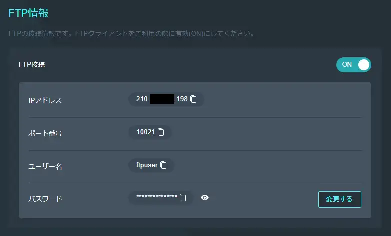
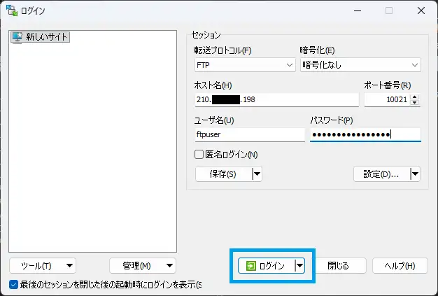
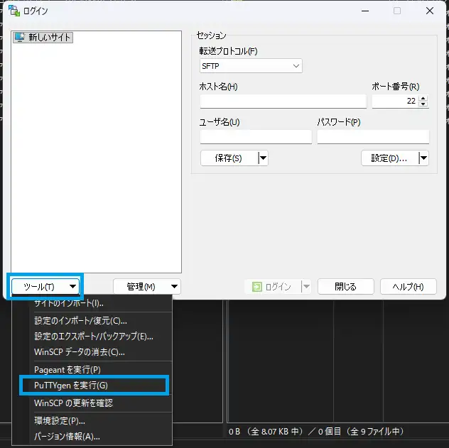
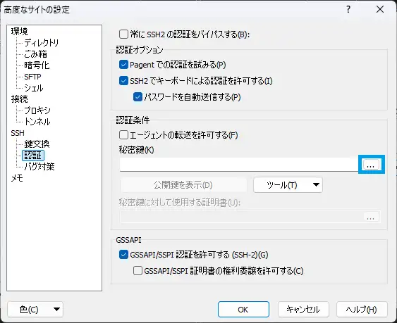

マイクラサーバーにお手持ちのワールドをアップロードする方法を解説します。もちろん、ダウンロードも可能です。
マイクラサーバー向けレンタルサーバーの場合、VPSや自宅サーバーなどSSH接続できる環境での操作を両方解説します。
ワールドバージョンは、サーバーのバージョンと同じか、少し古いものなら対応しています。
使用するソフトは、どちらの場合でもWinSCPを例にします。
ソフト (FTPクライアント) を用意
ソフトを用意します。今回はWinSCPを使用しますが、その他でも操作はほとんど同じだと思います。
WinSCP公式サイトダウンロードページレンタルサーバーの場合
多くのレンタルサーバーでは、FTPでのワールドアップロードに対応していますので、それを利用します。接続確立までの手順は、ご契約のレンタルサーバーのマニュアルもご確認ください。
ブラウザでの準備
契約しているレンタルサーバーのアカウントにログインしてください。
多くのレンタルサーバーでは、ワールドのアップロードのためにFTP接続用のIP、ユーザー名、パスワードが用意されているはずですので、それを探してください。 もし、その近くに「接続を開始」などボタンがある場合は押しておいてください。セキュリティのため時間制限があるかもしれません。
例として、 XServer Games の管理画面を掲載します。
{kind=link}

接続の確立
WinSCPを起動し、転送プロトコルにFTPを選択します。
ホスト名 (IPアドレス)、ポート番号、ユーザー名、パスワードを入力し、ログインをクリックします。
接続を確立しましたら、アップロードの項目 へ進んでください。
{kind=link}

クリックで元のサイズの画像を表示しますVPSや自宅サーバーの場合
VPSや自宅サーバーの場合は、SFTPというSSH上で働くプロトコルを使用します。これらのサーバーを運用されている方はすでにSSHで接続できる状態になっているでしょうから、それなら追加の設定が要りません。
私はこのことに気づかず、わざわざFTPサーバーの設定とファイアウォールの設定をやっていました。
ただし、鍵認証に限定している場合はひと手間必要です。
権限の確認
これは、わかりきっているなら不要です。
SSHでの接続や、今回のSFTPで接続するユーザーがマイクラサーバーのworldディレクトリをwriteする権限を持っている必要があります。
標準では所有者（マイクラサーバーを最初に起動したときのユーザー）のみwrite権限を持っていますので、所有者以外のユーザーでSSHする場合はchmodしておいてください。
パスワード認証の場合
プロトコルに、SFTPを選びます。ポート番号にはSSHのポートを入力します。
パスワード認証の場合は、ホスト名 (IP)と、ユーザー名、パスワードを入力し、ログインをクリックすると接続できるはずです。
鍵認証の場合
鍵認証の場合は、準備としてお手持ちの秘密鍵をppk化する必要があります。
ツール > PuTTYgen を実行 をクリック
{kind=link}

設定をクリックし、 SSH > 認証 > 認証条件 > 秘密鍵 の右の…をクリックし、先ほど生成したppkを選択。OKで戻る。
{kind=link}

プロトコルにSFTPを選択、ホスト名（IP）と、ユーザー名を入力し、ログインをクリックします。パスワードは空欄にします。ポート番号にはSSHのポートを入力します。
鍵にパスフレーズを設定しているなら、この後に入力します。
アップロード
ログインできたら、画面左にPC、右にサーバーが表示されていると思いますので、サーバー側で "world" フォルダを探します。
用意したワールドのフォルダのデータを Ctrl + Aで全選択し、サーバーのworldフォルダにドラッグアンドドロップし、ファイルを置き換えます。
{kind=link}
アップロードはこれで終了です。サーバーを再起動してください。